[C#] Geckoライブラリを利用してウェブスクレイピングする方法
こんにちは。明月です。
この投稿はC#でGeckoライブラリを利用してウェブスクレイピングする方法に関する説明です。
HtmlのレイアウトエンジンとはHtmlドキュメントとCSS Style、Javascriptを画面に描画するレンダリングするエンジンです。
レンダリングエンジンの種類は代表的にMSのIEとMozilla財団のGeckoがあります。IEレンダリングのMSHTMLがありますが、IE 8.0バージョンまではC#で参照して使えます。IEの8.0バージョンはもう10年前のレンダリングエンジンだし、今のスタイルなら様々でエラーが発生するかもしれません。
Geckoレンダリングは60バージョンです。IEより最新バージョンです。
GeckoレイアウトのライブラリはC#のNugetでダウンロード及び連携が可能です。
ブラウザライブラリは一応、WindowのProcメッセージのキューが必要なのでWindow Forms Appでプロジェクトを生成します。
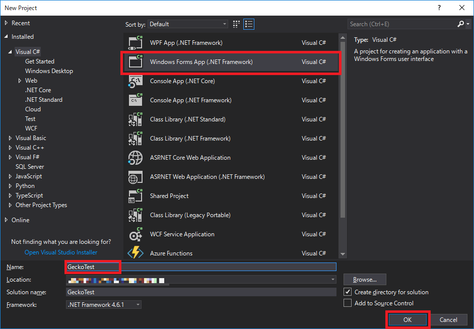
そしてNugetを通ってGeckoライブラリを連携します。
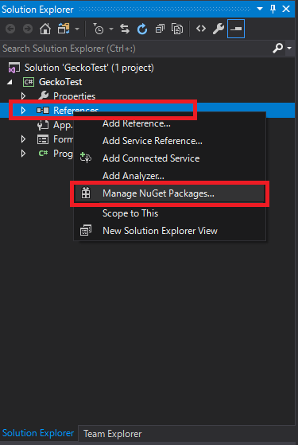
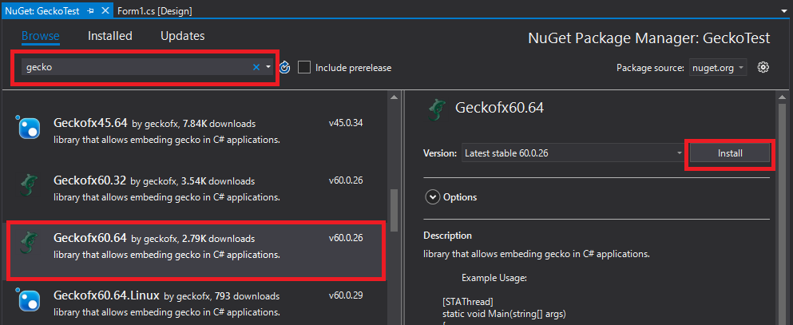
上のイメージをみれば以前45バージョンもあります。45バージョンで作成するなら60バージョンと同じです。ここでは60で作成します。
一応、私のOSは64ビットなので64ビットで作成します。 32ビットも作成方法も同じです。
Windowデザインフォームの隣のtoolbarをみればGecko-browserコントロールができたことを確認できます。
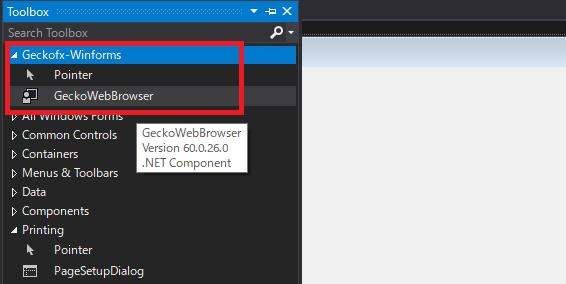
このWindowsフォームにDrap＆Dropした後でプロパティのdockをfillに合わせています。
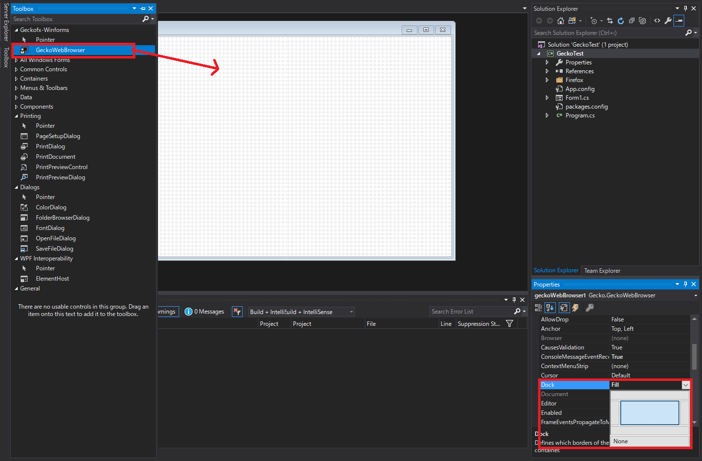
これからFirefox.dllファイルを注入する必要があります。
右Program.csファイルを開いて,下記のソースを追加します。
Xpcom.EnableProfileMonitoring = false;
var app_dir = Path.GetDirectoryName(Application.ExecutablePath);
Xpcom.Initialize(Path.Combine(app_dir, "Firefox64"));
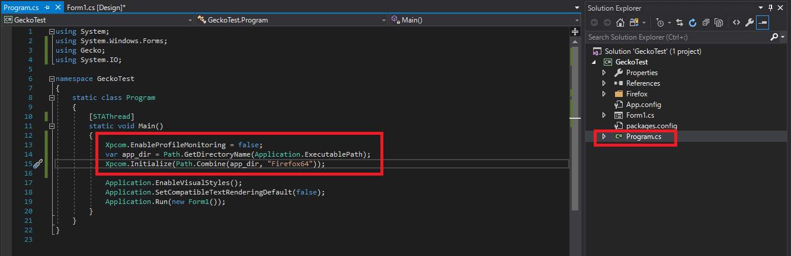
そして右のForm1.csファイルを右クリックしをして、ソースビューでソースを開きます。
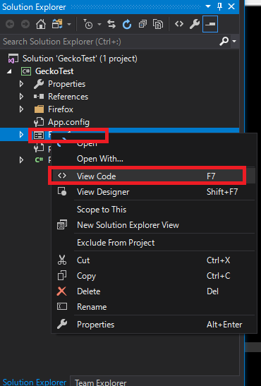
using System;
using System.Windows.Forms;
using Gecko;
using Gecko.DOM;
namespace GeckoTest
{
public partial class Form1 : Form
{
bool flag = true;
public Form1()
{
InitializeComponent();
}
// FormのOnload関数をオバーライドした。
protected override void OnLoad(EventArgs e)
{
// 親クラスのOnLoad関数を呼び出す。
base.OnLoad(e);
// yahooに接続する。
this.geckoWebBrowser1.Navigate("www.yahoo.co.jp");
// 接続が完了する時にイベント設定
this.geckoWebBrowser1.DocumentCompleted += GeckoWebBrowser1_DocumentCompleted;
}
// イベント関数
private void GeckoWebBrowser1_DocumentCompleted(object sender, Gecko.Events.GeckoDocumentCompletedEventArgs e)
{
// Geckoブラウザオブジェクトを取得する。
GeckoWebBrowser browser = (GeckoWebBrowser)sender;
// URLでyahoo.co.jpの場合
if (browser.Url.Equals("https://www.yahoo.co.jp/") && flag)
{
// 検索画面になったらflagをfalseを変換
flag = false;
// document取得する。
var doc = browser.Document;
// 検索テキスト
(doc.GetElementsByName("p")[0] as GeckoInputElement).Value = "site://www.nowonbun.com";
// 検索ボタンクリック
(doc.GetElementsByClassName("rapid-noclick-resp")[0] as GeckoButtonElement).Click();
}
}
}
}
上みたいにスクレイピングソースを作成しました。
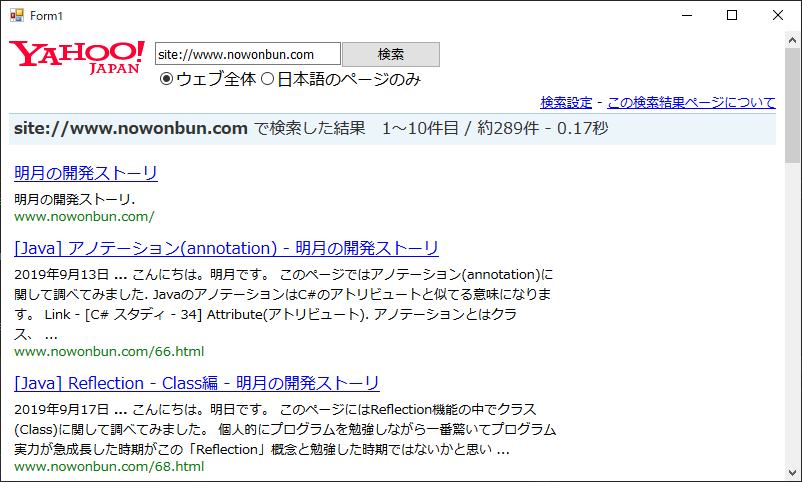
結果みたいにスクレイピングになったことを確認できます。
-- もしエラーが発生する場合 --
1. 64ビットに設定しても64ビットでできない場合があります。
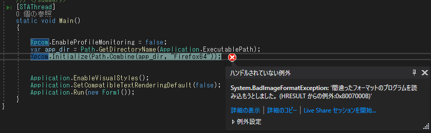
デバッグ設定をx64に変更すれば解決できます。
デバッグのPropertyメニューを開きます。
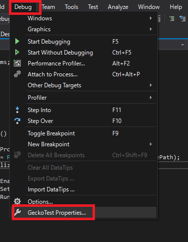
メニューのBuildタブでプラットフォームをx64に変更すると解決できます。
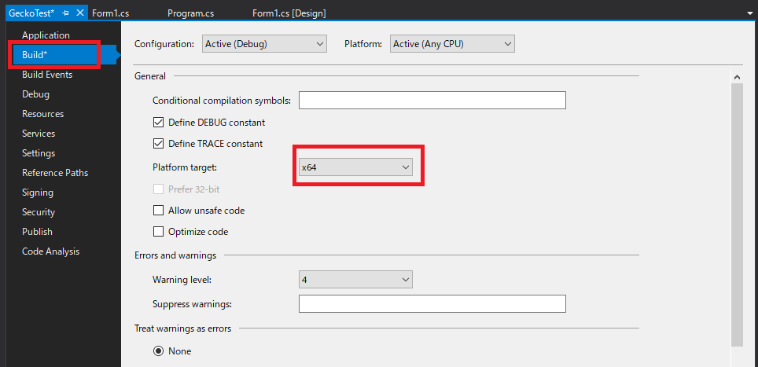
2. dllファイルを読み込めませんというエラーメッセージが発生する可能性があります。
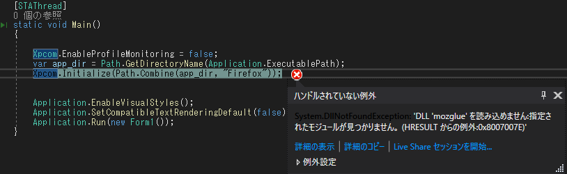
この場合はdebugフォルダーが間違って設定されている場合に発生します。
var app_dir = Path.GetDirectoryName(Application.ExecutablePath);
Xpcom.Initialize(Path.Combine(app_dir, "Firefox64"));
デフォルトならDebugフォルダーのFirefox64のサブフォルダにモジュールがあります。
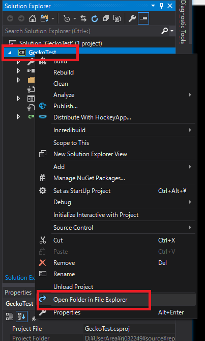
binのdebugフォルダーに移動すればFirefox64フォルダがあることが確認できます。
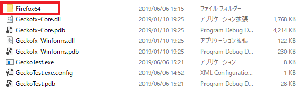
ここのフォルダとFirefox64のフォルダ名を一致すると問題なく実行されます。
個人的に最近AfxWebBrowserとWebBrowserよりGeckoBrowserオブジェクトが安定的に使えます。C#の基本WebBrowserオブジェクトはMSIEの8バージョンなので最近のウェブページではScriptエラーが発生する可能性が高いです。
--参考--
ウェブスクレイピング開発のトレンドはGeckoBrowserとHttpWebRequestを混ぜって使います。
でもGeckoBrowserとHttpWebRequestは別のクラスでセッションやクッキー情報の同期化が必要です。
HttpWebRequest request = (HttpWebRequest)WebRequest.Create();
request.Headers["Cookie"] = browser.Document.Cookie;
テストするサイトがないから参考事項で作成しておきました。
ここまでC#でGeckoライブラリを利用してウェブスクレイピングする方法に関する説明でした。
ご不明なところや間違いところがあればコメントしてください。
- [C#] 非同期ソケット通信(IOCP)-APMパターン2020/05/18 18:45:37
- [C#] 非同期ソケット通信(IOCP)-EAPパターン2020/05/15 19:31:02
- [C#] NPOIを利用してExcelを読み込んで出力する方法2020/05/08 10:43:52
- [C#] NPOIライブラリを利用してエクセルファイルを生成する方法2020/05/07 01:49:01
- [C#] Geckoライブラリを利用してウェブスクレイピングする方法2020/05/05 00:52:26
- [C#] PDFを作成する方法(iTextSharp)2020/05/03 10:22:40
- [C#] シリアライズ(Serialization)をする方法2020/04/30 19:32:04
- [C#] dynamicタイプの動的パラメータ-DynamicObject(WinFormでASP.MVCのViewBagオブジェクトを使用する方法)2020/04/29 22:41:32
- [C#] Stringの補間式(interpolation)2020/04/27 20:39:57
- [C#] Newtonsoft.JSONライブラリを利用してJsonデータ構造を扱う方法2020/04/23 20:19:53
- [C#] EMailを送信する方法(System.Net.Mail)2020/04/22 19:00:42
- [C#] ini環境ファイルを使う方法2020/04/22 00:09:39
- [C#] 環境設定ファイルを扱う方法(System.Configuration)2020/04/20 19:37:57
- [C#] Reflectionを利用してクラス複製する方法2020/04/17 00:34:33
- [C#] XMLをXPathを利用してデータを取得する方法2020/04/16 00:47:17
- [Python] Apache cgiでPythonを使う方法2020/07/09 19:58:19
- [Python] Web serverを起動する方法(http.server)2020/07/09 00:13:13
- [Python] WebSocketを使う方法2020/07/07 17:29:18
- [Python] PythonとJavaのソケット通信する方法2020/07/03 18:35:50
- [Python] PythonとC#のソケット通信2020/07/01 19:28:22
- [Python] INI(環境設定ファイル)を扱う方法2020/06/30 18:26:01
- [Python] Jsonを扱う方法2020/06/29 19:18:15
- [Python] XMLファイルを扱う方法2020/06/26 19:18:14
- [Python] IOを利用してCSVファイルを扱う方法2020/06/25 18:20:30
- [Python] 21. データベース(mariaDB)を連結する方法2020/06/24 18:51:50
- [Python] 20. stringフォマード(Formatting)と補間法(interpolation)2020/06/23 19:03:21
- [Python] 19. 非同期IOのasync/await(asyncio)を使う方法2020/06/22 18:10:12
- [Python] 18. ネットワーク(Socket)通信する方法2020/06/18 19:53:56
- [Python] 17. スレッド(Thread)とロック(lock)、そしてデッドロック(deadlock)2020/06/18 00:19:45
- [Python] 16. IO(ファイル読み取り、書き込み)を扱う方法2020/06/16 18:37:00